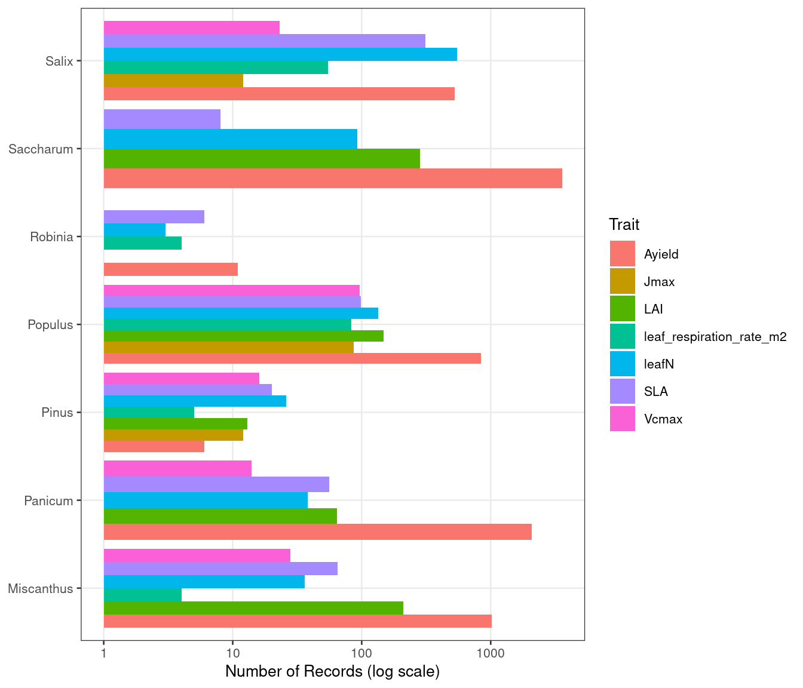
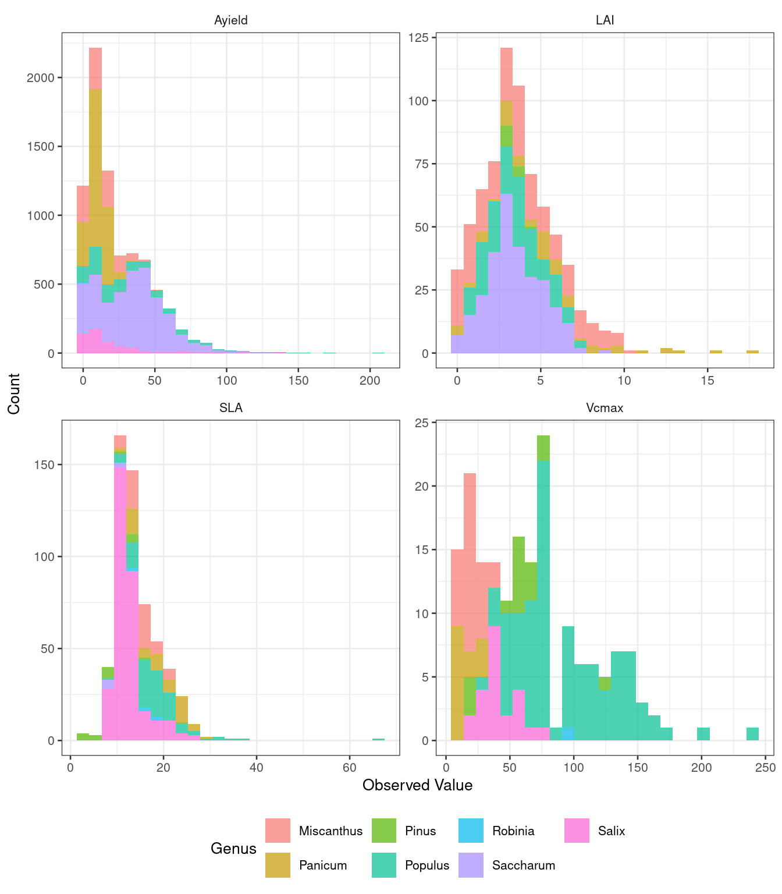
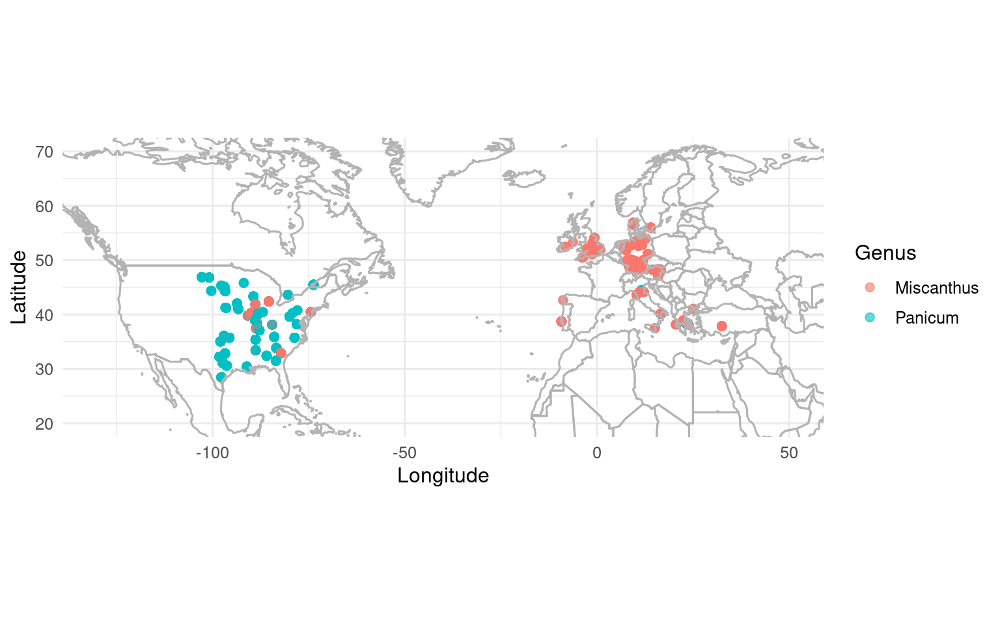

library(betydata)
library(dplyr)
library(ggplot2)
theme_set(theme_bw(base_size = 10, base_family = "sans"))Reproducing BETYdb Manuscript Analyses
What you will learn
- How to reproduce key figures and tables from the BETYdb publication
- How to summarize trait and yield data by genus, trait, and site
- How current data compares to the 2017 snapshot used in the paper
Introduction
This vignette reproduces key analyses from the BETYdb manuscript (LeBauer et al., 2018) using the betydata package.
Citation: LeBauer, D. S., et al. (2018). BETYdb: a yield, trait, and ecosystem service database applied to second-generation bioenergy feedstock production. GCB Bioenergy. doi:10.1111/gcbb.12420
Setup
Figure 1: Data Summary by Genus
The manuscript presents trait and yield counts for key bioenergy genera. We reproduce this using traitsview:
bioenergy_genera <- c("Miscanthus", "Panicum", "Populus", "Saccharum",
"Pinus", "Salix", "Robinia")
genus_summary <- traitsview |>
filter(genus %in% bioenergy_genera, checked >= 0) |>
summarise(
n_traits = sum(result_type == "traits", na.rm = TRUE),
n_yields = sum(result_type == "yields", na.rm = TRUE),
total = n(),
.by = genus
) |>
arrange(desc(total))
genus_summary |>
knitr::kable(col.names = c("Genus", "Traits", "Yields", "Total"))| Genus | Traits | Yields | Total |
|---|---|---|---|
| Saccharum | 1579 | 3578 | 5157 |
| Populus | 3144 | 841 | 3985 |
| Miscanthus | 2666 | 1021 | 3687 |
| Panicum | 619 | 2087 | 2706 |
| Salix | 1847 | 528 | 2375 |
| Pinus | 1377 | 6 | 1383 |
| Robinia | 41 | 11 | 52 |
Comparison Notes
Counts may differ from the published manuscript because:
- QA/QC filtering: betydata excludes
checked = -1(failed QA/QC records) - Snapshot date: betydata was exported from a current database snapshot; the manuscript used 2017 data
- Access level: betydata includes only public data from BETYdb
Figure 2: Trait Records by Genus
focal_traits <- c("Ayield", "leafN", "LAI", "SLA", "Vcmax",
"leaf_respiration_rate_m2", "Jmax")
trait_counts <- traitsview |>
filter(
genus %in% bioenergy_genera,
trait %in% focal_traits,
checked >= 0
) |>
count(genus, trait, name = "n")
ggplot(trait_counts, aes(x = genus, y = n, fill = trait)) +
geom_col(position = "dodge") +
scale_y_log10(breaks = c(1, 10, 100, 1000, 10000)) +
coord_flip() +
labs(
x = NULL,
y = "Number of Records (log scale)",
fill = "Trait"
) +
theme(
legend.position = "right",
panel.grid.minor = element_blank()
)
Figure 3: Trait Distributions
The manuscript displays histograms of trait values across genera, showing the spread of measured values for key ecophysiological parameters.
hist_traits <- c("Ayield", "SLA", "Vcmax", "LAI")
trait_data <- traitsview |>
filter(
trait %in% hist_traits,
!is.na(mean),
checked >= 0,
genus %in% bioenergy_genera
)
ggplot(trait_data, aes(x = mean, fill = genus)) +
geom_histogram(bins = 25, alpha = 0.7) +
facet_wrap(~trait, scales = "free", ncol = 2) +
labs(
x = "Observed Value",
y = "Count",
fill = "Genus"
) +
theme(
legend.position = "bottom",
strip.background = element_blank()
)
Table 1: Database Contents Summary
contents <- traitsview |>
filter(checked >= 0) |>
summarise(
n_traits = sum(result_type == "traits", na.rm = TRUE),
n_yields = sum(result_type == "yields", na.rm = TRUE),
total = n(),
.by = genus
) |>
filter(total >= 100) |>
arrange(desc(total))
knitr::kable(
head(contents, 15),
col.names = c("Genus", "Traits", "Yields", "Total")
)| Genus | Traits | Yields | Total |
|---|---|---|---|
| Saccharum | 1579 | 3578 | 5157 |
| Populus | 3144 | 841 | 3985 |
| Miscanthus | 2666 | 1021 | 3687 |
| Panicum | 619 | 2087 | 2706 |
| Salix | 1847 | 528 | 2375 |
| Petasites | 1770 | 0 | 1770 |
| Carex | 1579 | 0 | 1579 |
| NA | 1463 | 48 | 1511 |
| Eriophorum | 1471 | 0 | 1471 |
| Pinus | 1377 | 6 | 1383 |
| Acer | 1044 | 3 | 1047 |
| Picea | 989 | 0 | 989 |
| Betula | 803 | 0 | 803 |
| Quercus | 645 | 18 | 663 |
| Dupontia | 598 | 0 | 598 |
Yield Meta-Analysis Subset
The manuscript includes a meta-analysis of Miscanthus and switchgrass (Panicum) yields. Here we extract the relevant subset and compute summary statistics.
yield_ma <- traitsview |>
filter(
genus %in% c("Miscanthus", "Panicum"),
trait == "Ayield",
!is.na(lat),
!is.na(lon),
!is.na(mean),
checked >= 0
) |>
select(
id, genus, scientificname, mean, units,
n, stat, statname, lat, lon,
author, citation_year, sitename, site_id
)
yield_ma |>
summarise(
n_records = n(),
mean_yield = round(mean(mean), 1),
sd_yield = round(sd(mean), 1),
n_sites = n_distinct(site_id),
.by = genus
) |>
knitr::kable(col.names = c("Genus", "Records", "Mean Yield (Mg/ha)", "SD", "Sites"))| Genus | Records | Mean Yield (Mg/ha) | SD | Sites |
|---|---|---|---|---|
| Panicum | 2011 | 9.9 | 5.4 | 66 |
| Miscanthus | 993 | 12.8 | 10.5 | 80 |
Geographic Distribution
ggplot(yield_ma, aes(x = lon, y = lat, color = genus)) +
geom_point(alpha = 0.6, size = 2) +
borders("world", colour = "grey70", fill = NA) +
coord_quickmap(xlim = c(-130, 50), ylim = c(20, 70)) +
labs(
x = "Longitude",
y = "Latitude",
color = "Genus"
) +
theme_minimal(base_size = 12)
Extending This Analysis
The sites table contains additional geographic and climate metadata (mat, map, soil) that can be joined to enable climate-response analyses.
References
- LeBauer, D. S., et al. (2018). BETYdb: a yield, trait, and ecosystem service database applied to second-generation bioenergy feedstock production. GCB Bioenergy. doi:10.1111/gcbb.12420